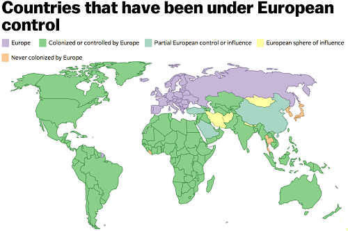

is an aspiring philosopher king, living the dream, travelling the world, hoarding FRNs and ignoring Americunts. He is a European at heart, lover of Latinas, and currently residing in the USA.


At the risk of breaking a personal journalistic rule of devoting far too much time to an incredibly miniscule and unimportant issue, I must draw attention to a recent win for masculinity. The island nation of Japan recently made a common sense decision regarding the extremely minute portion of its population that is dealing with the first world problem of its genitalia not matching the perceived sex of the owner, known in the West as transsexuals or “gender questioning individuals” to use the word salad nonsensical parlance of the day.
Sure thing, toots, just as soon as you lose the balls.
First, I should clarify that no one is being banned, deported, or shipped out of the country in a way that a more aggressive nation like Saudi Arabia might handle this issue. Instead Japan has a simple policy which efficiently handles the transsexual question—one that seems to bewilder and confuse the Western world, who must devote weekly news articles, federal legislation, prime time (((television programming))) and endless discussion on how to handle this fraction of a percentage of its population.
It works like this: do you have a penis? If yes then you cannot be a chick. It’s as simple as that.
With that one universal test, Japan has disposed of the endless head-scratching and policy making by Western politicians, critics, and social justice warriors about how to describe their private parts on government identification cards or which restrooms to pee in. In Japan you will be considered a man as long as you have a penis. End of story.
Likewise, if you have a vagina, you will be considered a woman. No matter what clothes you are wearing, how deep your voice is, or how you choose to “identify” that day. The beauty is in the simplicity.
Japanese Sex Change Operation
While Western nations must debate and compromise, legislate and propose, carving out exceptions for this or that behavior and endlessly consulting irate social justice warriors in a futile attempt to placate them, Japan disposes with the entire question of transsexual people with the simple question.
In the Japanese system, Bruce Jenner would not once have been a news story during my lifetime, as he has done nothing newsworthy since winning a 1976 Olympic medal. If and when he actually removes his penis and replaces it with a surgical vagina (Sugina from hereon), only then could he be properly considered a female and could announce he would like to be referred to as Caitlyn. (A person changing their sex is still not a newsworthy story to me, but I suppose there are those who would be interested to know what happened to this former hero of theirs).
Japan is a fascinating nation. As an island nation, it is naturally more isolated than most cultures, and is able to control physically and culturally what enters its society. Japan is one of the more difficult countries to immigrate to, and I have been told that Japanese will never fully accept Westerners, even if you take a Japanese wife and live there for decades (and why should they, as those actions will make you no more Japanese than Bruce Jenner installing a sugina will make him a woman).

Japan is one of the only societies in the world that was never controlled by Europeans. It holds on to its traditions, and has a strong history of physical fitness including the samurai warrior. While Westerners are committing virtual seppuku because they touched a woman’s butt in 1984, Japanese businessmen will glibly walk to a vending machine and purchase a high school girl’s panties for sexual purposes.
An oddity to a westerner, but in Japan men are not ashamed to be men
Odd? Sure, and I’m not going to even go down the road of weird Japanese kinks and bizarre pornography, but the point is the Japanese are proudly Japanese, and will not let others shame them into changing their behavior. I will always remember the line from James Bond’s You Only Live Twice concerning women and men, which made an indelible impression on me since childhood.
In Japan, men always come first. Women come second.
Outside of the West in The Current Year, I doubt anyone has given this question serious thought, but today, sadly, it is necessary. If you ask yourself what truly makes someone a woman, It comes down to whether they have a penis or a vagina in their pants.
“OK is She REALLY a man or a woman?” Can only refer to one thing.
While there are levels of masculinity and feminity which vary between the sexes, at the end of the day, if you really want to know someone’s sex, you want to know what genitalia they have. All Japan is doing is confirming, yes, that is exactly what sex means.
Just as feminists are opposed to true diversity, the public discussion of sexual dysphoria is a distraction from the minority of people who have real problems with their sexual identification.
Just as those who suffer from the horrible crime of violent rape do NOT want to publicly discuss their traumatic past, those who suffer from rare sexual disorders or chromosomal mutations that affect their sexuality are embarrassed and saddened by their condition. Those who truly have a medical condition which causes their genitalia to be deformed, or not match the sex they mentally feel, or who were a victim of a botched (((circumcision))) want to quietly rectify the problem and live life without others knowing about the unpleasant thing that happened in their past.
The LAST thing they want is to publicly exclaim that they were one sex and are now the other. Which seems to be ALL that being a trans-trender is about. Watch a Youtube video of a prominent transtrender like Justin “Riley” Dennis, and all you were hear is endless talk about their gender identification or their transition (despite the fact that they have rarely if ever actually snipped off the bits and therefore have transformed nothing).
Dr. Wang, Japan’s Top Sex Change Doctor
By forcing those who claim their sex is “wrong” to surgically correct their sex, Japan is calling their bluff and separating the trans-trenders from the trans-genders. There is no further debate or discussion needed with such a policy. While the West is trying to fire, fine or even imprison academics for using the wrong (read: gramatically correct) gender pronouns when referring to snowflake students, Japan has a simple system: If you want to be a woman, you need to have a vagina. If you weren’t born with one, get one first and check back with us.
While most of us probably aren’t comfortable with the idea of going to bed with someone who was born a man, the truth is, if one are attractive enough, and has a vagina, men will want to sleep with you, especially if they don’t know about your past (this is a universal truth, not specific to trannies). So if potential trannies really want acceptance by men in the sexual marketplace, this is exactly the model they should be following.
Read More: Are You Ready To Live In A Society That Pressures Toddlers To Become Transgender?